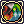
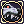
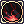
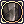
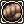

Tank
- Tank refers to a Monster Hunter: The Savage Coast mechanic or behavior. It is only applicable to High Rank Hunts.
Tank is one of the roles you can get before departing in High Rank Hunts, via Role Manager in The Wyvern (162/196). It offers supportive and defensive abilities to help allies with Aggro management and damage mitigation when fighting Great Monsters.
Tanks generate 300% Aggro from monsters on the Savage Coast.
Limitations: Maximum of 2 members per party
Class Restrictions: None
Skills
| Skill | Type | Properties | Description |
|---|---|---|---|
|  Elemental Aegis | Supportive |
|
Empower yourself and your allies within sight with an Aegis that defends against myriad elements.
|
|  Defiant Stand | Supportive |
|
Defiantly take a stand, protecting yourself from any source of damage. Such an act of defiance fatigues you, making you less of a threat to an enemy while protected.
Applies Emotionally Exhausted after the effect ends, leaving you unable to generate Fury stacks and unable to re-cast  Climactic Fury for 20 seconds. |
| Climactic Fury | Passive/Offensive |
|
Skill Form - Passive: When hit by a Great Monster, you will gain a stack of Fury.
Fury stacks can only be gained every 3 seconds and when the duration ends, the stacks will decrease one by one. Skill Form - Offensive:
Upon attacking you are left Emotionally Exhausted, unable to generate Fury and unable to re-cast Climactic Fury for 15 seconds. The severity of the attack is determined by Weapon level, Weapon refine amount current HP, Hard DEF, and Fury stacks. |
|  Vanguard | Supportive |
|
Enter a legendary protective stance preparing to absorb a single incoming attack. Successfully absorbing a hit invigorates your defenses and Fury.
After an attack is blocked, all auto-attack damage is reduced by 15% for 10s duration if used unsuccessfully, it will go to 5 seconds cooldown
|
|  Sentinel | Passive/Active |
|
Skill Form - Passive: You have learned to strengthen your defenses against all types of attacks. Your focus on defense has subsequently lowered the effectiveness of your attacks.
Skill Form - Active:
|
| Active |
|
Activate-able within 3 seconds of receiving damage from a Monster, Deals damage to all Monster within 3 cells of you with greatly increased Hate and Rage generation, Damage determined by Weapon level, Weapon refine amount current HP, Hard DEF, and Fury stacks same as Climactic Fury
Afterwards you are left Exhausted leaving you unable to generate Fury stacks and unable to re-cast Climactic Fury for 6 seconds upon taking your stand.
|
| Monster Hunting | ||
|---|---|---|
| Low Rank Hunts • High Rank Hunts | ||
| Hunting Mechanics | Rage • Hate • Skills • Alterations | |
| Player Roles | Tank • Damage • Healer • Utility | |
| Monsters |
1-Star Hunts | Garanth • Nyia |
| 2-Star Hunts | Garronath • Nysori | |
| 3-Star Hunts | Angnar • Zaedronath | |
| Unreleased | Sybaris • Vakaris • Hrungnir • Anko & Mako | |
| Regular Monsters | Ambient Monsters | |
| Rewards | Shadow Gear (Low Rank, High Rank (1/2-star), Angnar, Zaedronath) • Shadow Gear Refinement
Archangel Wings • Fallen Angel Wings • Ancient Hero • Temporal Armors • Violet Halo • Magical Booster • Bio Weapon Helms | |
| Gathering & Combinations | Mining • Fishing • Foraging • Combinations | |
| Lore | The Savage Coast • The Wyvern • Astrid • Seruel • Delphina • Sain • Will • Reidin Kurs | |